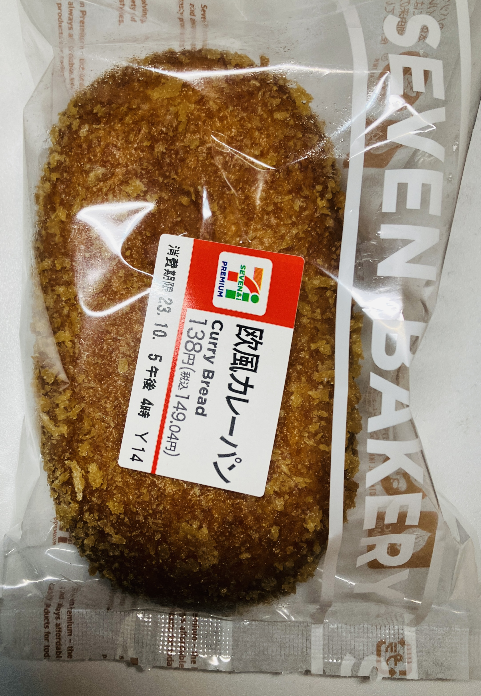
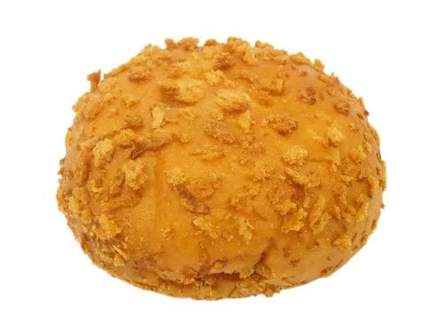
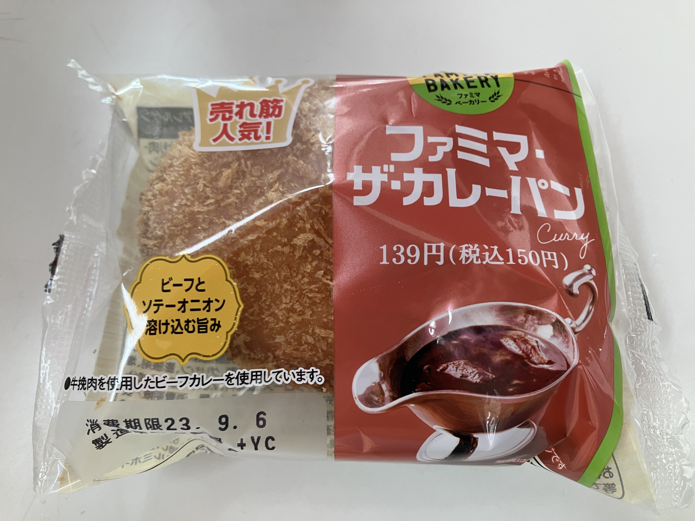

セブンイレブンの商品
生地がサクサクで油っこくない。万人ウケする味 歯切れのよいパン生地に、スパイシーなカレーフィリングがぎっしりと詰め込まれた商品。コクと旨みあふれる味わいで、幅広い世代の人たちから支持を集めています。 「味しっかりめであとを引く」「商品名通りコク旨！」「スパイスがきいているものの、辛すぎなくて良い」「レストランで食べるカレーの味！」と、フィリングのおいしさに定評あり。「生地が薄めでサクサク」「油っこさなし」のように、パン生地のクオリティも絶賛されています。
エネルギー
301kcal（1個あたり）
自分のコメント：満足感があった。
ローソンの商品
フィリングがみっちり。トーストするとザクザクの食感に ローソンこだわりのパンシリーズ「絶品シリーズ」から発売されているビーフカレーパン。生地に昆布だしの旨みとカレー粉の香りを効かせ、フィリングに17種類のスパイス、牛の香味油、しいたけエキスを使用しているのがポイントです。
税込価格
140円
エネルギー（1個あたり）
419kcal
自分のコメント：
ファミリーマートの商品
ファミリーマートのオリジナルパンブランド「ファミマ ベーカリー」の人気商品。ビーフとソテーオニオンの旨みが活きた欧風カレーフィリングを、もっちりとしたドーナツ生地で包み込んだカレーパンです。
価格 138円 エネルギー（1個あたり） 272kcal
自分のコメント：安さのわりには満足感があった。レンジで温めてたべるといい。